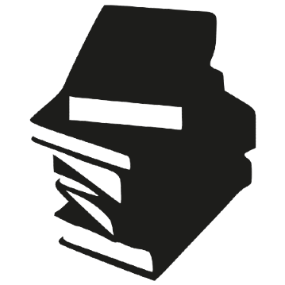

|
Porque la ilusión de un vacío luminoso en un cuarto oscuro donde se vive una historia es un portal a otra realidad. |
Porque es increíble cómo un montón de letras conjuntas pueden construir ciudades enteras,
personajes fantásticos y situaciones únicas. |
Porque es interesante y activa la posibilidad de manipular el destino de un ser ficticio sin llegarlo a manipular del todo. |
|  |
También me gustan los videos; en este espacio he puesto uno de mis favoritos.